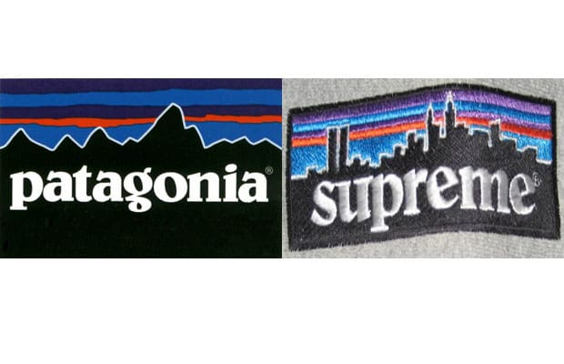
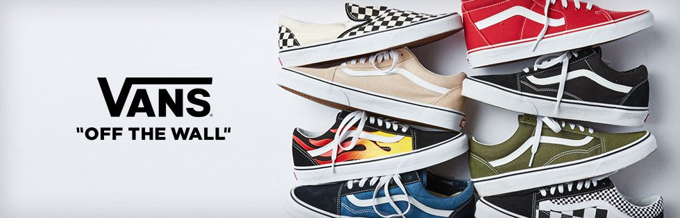
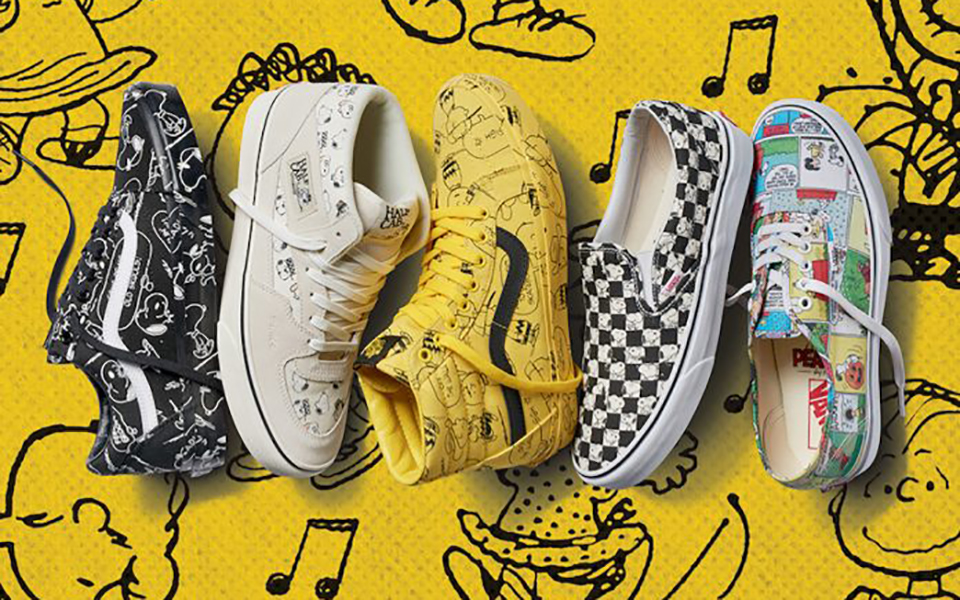

—Zazzy—
Press Play!

Patagonia is an American clothing company that sells outdoor clothing marketed as sustainable. The company was founded by Yvon Chouinard in 1973, and is based in Ventura, California. Its logo is the skyline of Cerro Fitz Roy in Patagonia.
Patagonia, an outdoor clothing brand with an environmental focus, was founded in 1973 by Yvon Chouinard, who since 1964 had been manufacturing pitons (metal anchors used in rock climbing) that would not damage the rock. While insisting on offering the best quality, the brand has contributed to a sustainable society and natural environment by developing eco-friendly materials and returning 1% of its sales back to society. Patagonia has redefined the role of a company and it continues to inspire the outdoor industry and the world.
Supreme have been doing homages to rugged staples for a long, long time. There's another box logo that resonates in a major way, and it's that of eco-minded hillside kingpins, Patagonia. Supreme paid tribute to the brand's street-level status in NYC with some pieces—including a fleece—that carried a rectangular logo with the city's skyline instead of a Patagonia district mountain. Shouts to 10Deep for their take on the logo a few years later and Tonite for turning those distinctive letters into 'PARTY ON.' Another Supreme homage deftly executed in a low-key style

Three months after saving the Gardenvale factory, Paul decided he wanted to start his own shoe brand. On March 16, 1966, at 704 East Broadway in Anaheim, California, brothers Paul Van Doren and James Van Doren, Gordon C Lee, and Serge D'Elia opened the first Vans store under the name The Van Doren Rubber Company.

Over the years Vans has always stayed true to the laid-back skater subculture that popularised the brand by releasing collabs to freshen up the normal bland design (Peanuts x Vans being the most recent). They have always managed to keep the costs reasonably sensible and ensured that designs are unique.